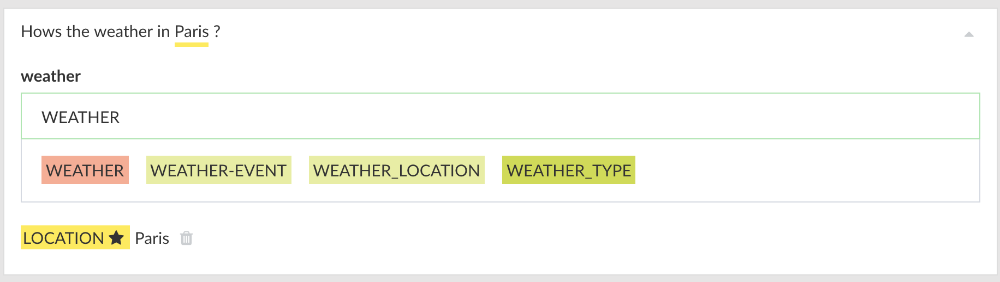

Defining Entities¶
An entity represents a term or object in the user's expression that provides clarification or specific context for a particular intent.
Here in the following example:

Here in the above statement, Location is an entity.
You can define an entity by highlighting a word and then clicking on the entities from the list or creating a new one by typing into filter box.

Entities are available as a context variable and can be accessed via context.nlp.entities to use from the conversation UI as template variable (e.g. {{nlp.location}}) or cloud code in the following way:
exports.handler = (context, done)=>{
console.log(context.nlp.entities);
done();
};